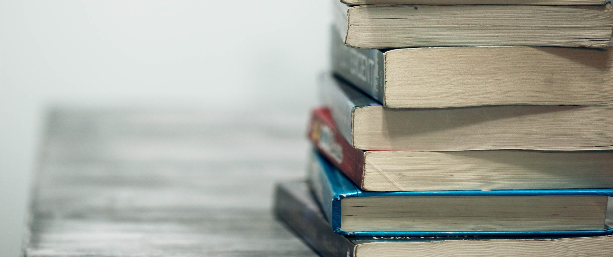

Work Experience
Operations Manager
Viloc Antwerp, 11/2014- current
Office Manager & assistant HR
PlayPass Antwerp, 12/2018-09/2019
Office Manager
TheseDays/Wunderman Antwerp, 05/2014-11/2014
Insurance administrator and analyst
Barclays Bank, United Kingdom (Poole) 06/2013-01/2014
Technical Customer care
WDS Global/HTC, United Kingdom (Bournemouth) 07/2012-06/2013
Courses & Education
Webdesign
CVO Antwerp 2020- current
French Courses
- Private course: Berlitz Antwerp, 2018
- Class: Turnhout CVO, 2016
- Course and stay in French host family, France (Nice), 2014
'Administratief Bediende'
Cevora Turnhout, 2014
Toegepaste Psychologie
Lessius Antwerp, 2010-2012
Sociale en Technische wetenschappen
Secondairy school Malle, 2004-2010